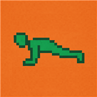

Zainstaluj Pompki
Użyj przycisku na tej stronie. Gdy pojawi się okno Chrome, potwierdź instalację.
Stuknij przycisk i pozostaw tę stronę otwartą przez około 30 sekund, aby Chrome mógł przygotować instalację.
Przejdź do Pompki vGPT_1.0.4
Użyj przycisku na tej stronie. Gdy pojawi się okno Chrome, potwierdź instalację.
Stuknij przycisk i pozostaw tę stronę otwartą przez około 30 sekund, aby Chrome mógł przygotować instalację.
Przejdź do Pompki vGPT_1.0.4